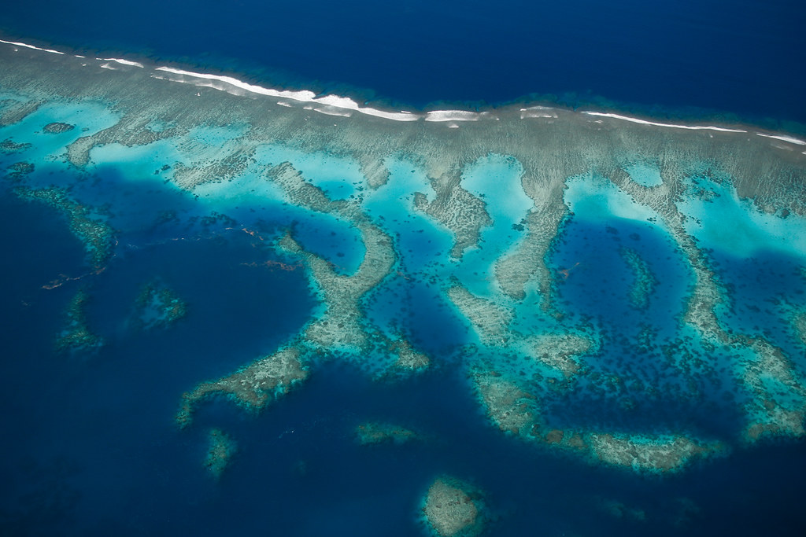
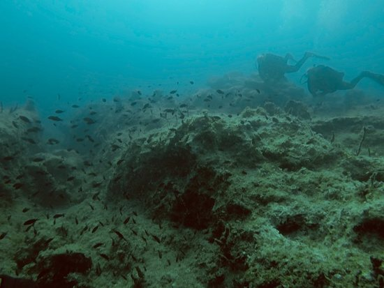
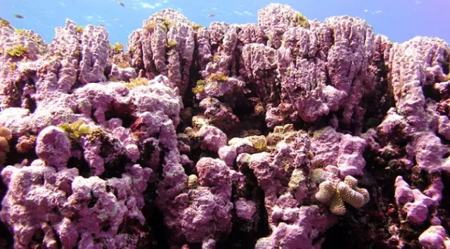
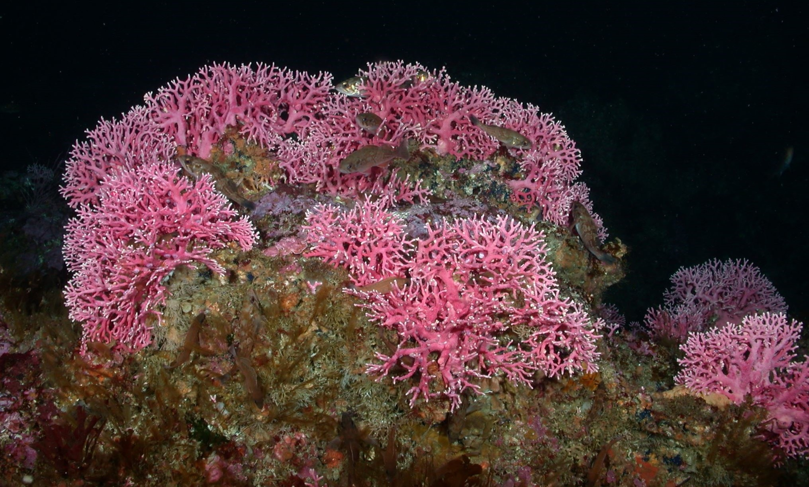

A reef is a structure that provides relief on the seafloor and a barrier to water movement. Reefs were relevant to sailors long before they were studied by scientists as they had to be carefully navigated on voyages. The word comes from the norse term 'rif' which means a hazardous 'rib' close to the surface of the sea. Reefs can be...
  natural (e.g. coral, rock or calcified algae)
...or artificial (e.g. a shipwreck or blocks placed to attract wildlife or induce waves for surfing).
The majority of marine organisms are not well adapted for survival on open sand banks. Things that grow on the seafloor are more likely to get swooshed about and animals that swim are more exposed to predators. This is why reefs support a much greater abundance of wildlife. They provide a stable structure for benthic organisms to grow. This in turn provides more food and shelter for even more organisms. Soon an entire complex food web builds up across the reef.
Coral is made of a colony of animal components called polyps, all living together in a single structure. They come in many different shapes, and their variety greatly contributes to the structural complexity on the reef. This is important because it opens up a range of microhabitats that can support many different organisms.
We can broadly group corals into two types. Hard corals (sometimes called 'stony' or 'scleractinian' corals) have rock-like skeletons (here referring to their 'housing') of calcium carbonate that stay preserved long after the polyps die. In contrast, soft corals only possess a small amount of calcium carbonate and will therefore sway with the water movement and their structures will not preserve for long after polyp death. The preservation of hard coral structures enables new generations of corals to build on top of dead ones, meaning that large reef structures can build up over millenia. Most established coral reefs are between five thousand and ten thousand years old!
Corals in sunlit waters also have a symbiotic relationship with zooxanthellae. This is a tiny photosynthetic algae that lives embedded on the outer tissue of the coral and supplies it with food and energy. The zooxanthellae contain pigments that absorb certain parts of the light spectrum. This provides corals with the spectacular array of colours that we see on the reef.
Photosynthetic coral reefs can only flourish in certain conditions. They need...
Warm temperatures all year round
The optimum temperature for photosynthetic corals ranges from 23 to 29oC. If the temperature is too low or too high, photosynthesis will be inhibited and the coral will die within weeks.
High sunlight
This is required for photosynthesis to supply food for the coral. For this reason, coral reefs are generally restricted to clear waters in the top 60 meters.
Low nutrient waters
We call these 'oligotrophic' waters. Corals need these because they are relatively slow growing organisms. If there is a high abundance of nutrients in the water, the nutrients will get rapidly get consumed by organisms that are much faster-growing, particularly algae, and this will quickly outgrow and outcompete the coral in the area.
It will take up space, blockout sunlight and use up much of the oxygen. All these factors will reduce the abundance, growth and health of the coral.
Because of these particular requirements, photosynthetic coral reefs are restricted to shallow tropical waters, generally within 30 degrees north or south of the equator.
There are exceptions however. There are deep sea and cold water corals that can sometimes be found as deep as over 2,000m. They do not recieve sunlight and therefore have no zooxanthellae. They feed by catching small particles of organic matter falling from shallower water. The communities of organisms that deep sea reefs harbour are very different to those of tropical phosotynthetic reefs.
There are three 'hotspots' of tropical reef communities. They are the Caribbean, the Red Sea and the Indo-Pacific.
The most biodiverse reefs in the world are found in the Indo-Pacific. This is due to a number of factors. For one thing, it is fed by biological communities from multiple oceans and land masses. The reefs here therefore recieve a lot of geographical overlap. Additionally, the seas here recieve an optimum amount of disturbance. The Caribbean recieves stronger and more severe storms, and this can inhibit the flourishing of wildlife. In contrast, the Red Sea receives very little rough weather. Surprisingly, this can also lower the diversity because a certain amount of stormy weather can help to restore the balance of nature by preventing certain species from dominating at the expense of others.
Coral reefs contain the most biodiversity of any ecosystem. They occupy less than 1% of the sea floor, but contain around one quarter of all sea life. This is due to the structural support provided by the coral itself. This acts as good shelter for fish and other organisms to thrive in. It also provides good anchorage for other organisms to grow on top of. This provides food for the fish. As the population of fish thrive, this brings in predators that eat the fish. The result is a rich flourising ecosystem. The animal kingdom is grouped into 36 phyla. Nine can be found in tropical rainforests. Coral reefs harbor 32.
Coral reefs also connect with other ecosystems. Some species migrate into and out of a coral reef for feeding purposes or cleaning services. This means that if the reef suffers, these animals may perish and the other habitats that they travel to will also be affected. Additionally, a lot of the biomass from coral reefs trickle down to feed life in deeper parts of the ocean where food is more scarce.
Food
Coral reefs are a major food source for up to one billion people. (Estimates vary according to sources.) Approximately 6 million people directly catch fish on reefs.
Tourism
Tourism around reefs comes in the form of diving, snorkelling, beach generation, sea food and more. Tourism from coral reefs is estimated to produce around $36 billion globally per year.
Coastal Protection
Coral reefs act as a very important barrier against waves and erosion. Reefs dissipate up to 97% of wave energy. This is significant because without them, coastal erosion and destruction, including damage to human structures on the coast, would be high. It is estimated that the presence of reefs saves the global economy from more than $4 billion worth of damage from coastal erosion per year.
Other Resources
Reefs also harbour other substances that are important or luxurious for humans. These include medicines, stock for the aquarium trade and building resources.
Cultural significance for many communities
All in all, coral reefs are estimated to produce around $30 billion per year for the global economy!
Fringing - Most common reef structure. Projects seaward from the shore.
Barrier - Border shorelines but at a greater distance than fringing reefs. Often separated from the shore by a lagoon. They used to be fringing reefs but over time the land sank so the distance between the reef and shoreline increased.
Atoll - Reefs become atolls when they previously surrounded an island but the land has fully sunken under the water, leaving a ring-shaped reef surrounding a lagoon in the centre.
Broadly speaking, the reef structure can be divided into an area called the reef flat (the flat inner reef area nearest the shore), the reef crest (the top of the area that begins to slope downwards toward the deep) and the reef slope.
Website by Joe Romain